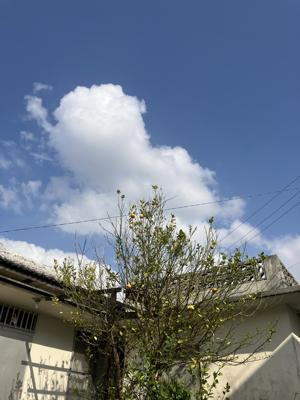
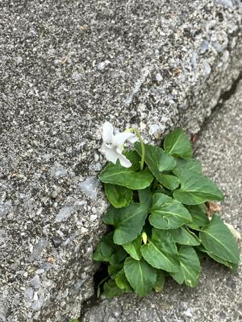
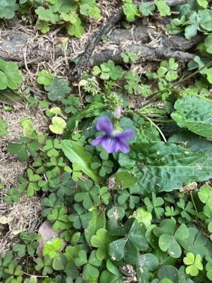
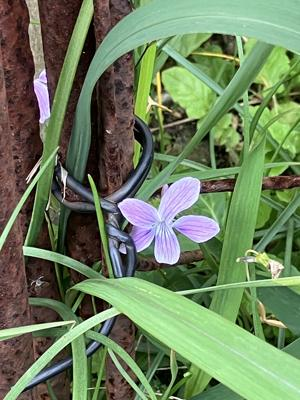
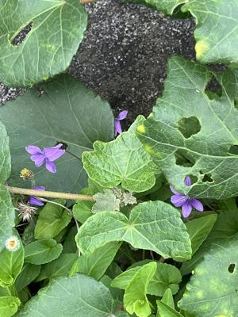
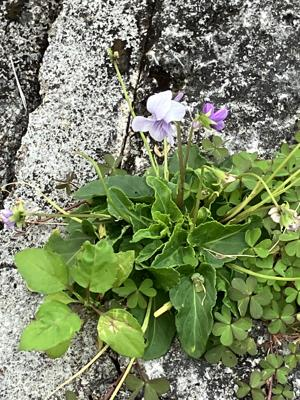
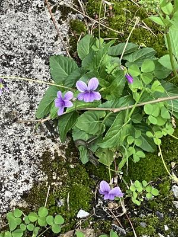
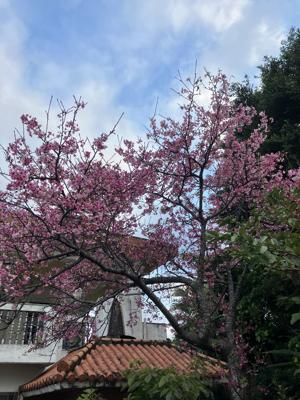
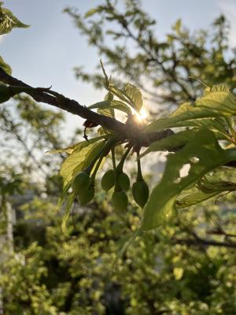

うるがいの話 ある日
最新: 白いスミレの花【うるがいの話 ある日】とは 一日だけのプログです
『うるがいの話』の最新一日だけのプログで、通信料が少なく経済的だ。カニの画像をクリックすると全ての日付が載る『うるがいの話』サイトを表示します
|
|
【うるがいの話】 うるがい(ｳﾙｶﾞｲ urugai)とは、『もずくがに』の名前でとても大きくなります。 |
|---|---|
|
|
【カミマヤーの話】 猫のことを方言でマヤーといいます。カミマヤー（kamimayaa）とは、神の猫のことです。 |
|
【たながぁの音楽】 たながぁ（ﾀﾅｶﾞｰ tanagaa）とは手長えびのことで、何種類かあり大きいのは車 エビぐらいになります。 |

|
【ぶながぁの話】 ぶながぁ(ﾌﾞﾅｶﾞｰ bunagaa)とは、赤い髪の毛、赤い身体、そして身長は１ｍ２０ｃｍ ぐらい、川の蟹を食べているの目撃された。場所は沖縄県国頭郡大宜味村のと ある村僕の隣近所に住んでいる爺さんから、聞いた話です。 |
|
|
【ギーマの話】 ギーマ(giima)とは、山原の里山に咲くスズランに似た、 花を付けます。実は食べられます、 気が付くと口の周りが紫になっています。 |
2025年02月20日 (木）白いスミレの花
15:31

家のスミレは、白い花です。屋敷で咲くのは全て白なのです。他は
と言えば、紫です。ジョギングのついでに、写真を撮りました。

白のスミレは「純潔」「あどけない恋」「無邪気な恋」という花言
葉を持っています。
紫スミレの花言葉は「貞節」「愛」です。
ウーン、マ、いいか。
公園の紫色のスミレ

ジョギングコースにある民家のスミレ

歩道のそばで咲くスミレ１

歩道のそばで咲くスミレ２

坂道でみたスミレ

ね、ほとんどが紫色なのですヨ
ジョギングコースにある民家の桜は今が満開。

家の桜といえば、サクランボが出来ていた。
